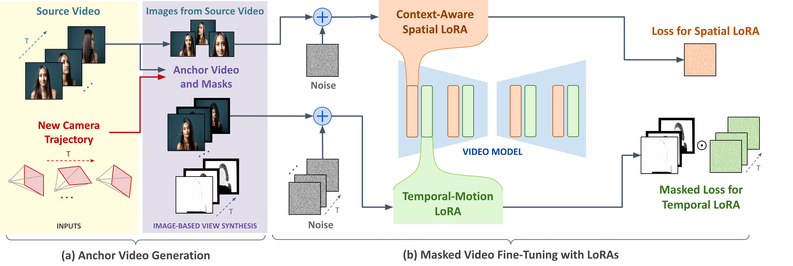
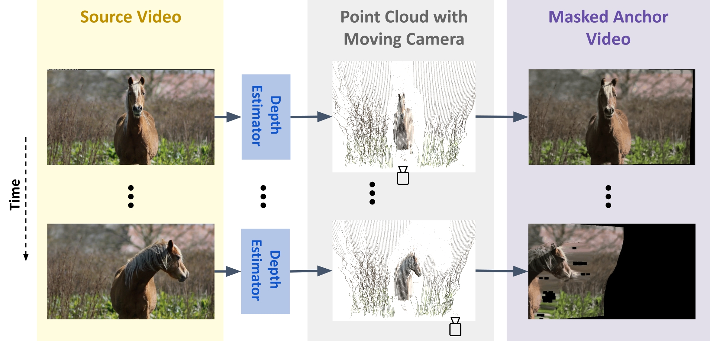
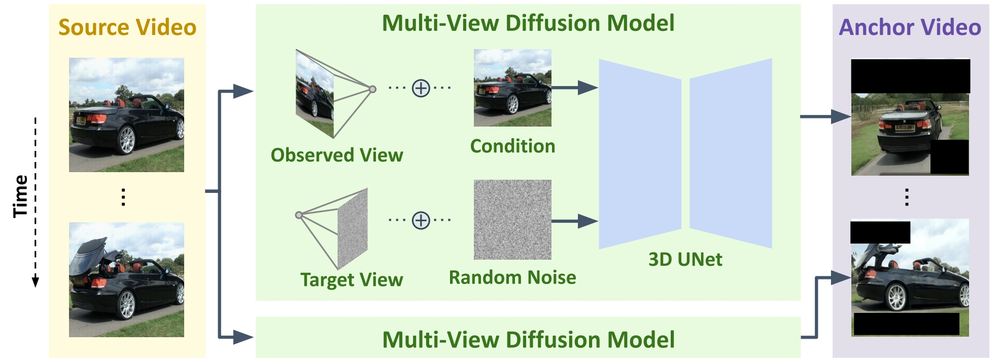

ReCapture: Generative Video Camera Controls for
User-Provided Videos using Masked Video Fine-Tuning
We present ReCapture, a method for generating new videos with novel camera trajectories from a single user-provided video. Our method allows us to re-generate the source video, with all its existing scene motion, from vastly different angles and with cinematic camera motion.
Abstract
Recently, breakthroughs in video modeling have allowed for controllable camera trajectories in generated videos. However, these methods cannot be directly applied to user-provided videos that are not generated by a video model. In this paper, we present ReCapture, a method for generating new videos with novel camera trajectories from a single user-provided video. Our method allows us to re-generate the reference video, with all its existing scene motion, from vastly different angles and with cinematic camera motion. Notably, using our method we can also plausibly hallucinate parts of the scene that were not observable in the reference video. Our method works by (1) generating a noisy anchor video with a new camera trajectory using multiview diffusion models or depth-based point cloud rendering and then (2) regenerating the anchor video into a clean and temporally consistent reangled video using our proposed masked video fine-tuning technique.
Gallery
The outcomes of various camera trajectories following ReCapture. You can select various camera motions by pressing the different buttons, and click the arrow to view multiple examples for each camera motion.
Method
ReCapture works by (a) generating a noisy anchor video with a new camera trajectory using multiview diffusion models or depth-based point cloud rendering and then (b) regenerating the anchor video into a clean and temporally consistent reangled video using our proposed masked video fine-tuning technique, which consists in finetuning a temporal LoRA on the masked anchor video to learn the scene dyanmics and a spatial LoRA on augmented frames from the source video in order to learn the appearance of the scene. Our masked video fine-tuning technique allows us to only learn the parts of the anchor video that are informative and ignore the missing regions.
Anchor Video Generation
For the first stage of our method, we want to generate an incomplete anchor video conditioned on the user-provided camera trajectory and reference video. One way to do this is by using frame-by-frame depth estimation and projecting each frame into 3D space to obtain a sequence of point clouds. Then, simulating the user-specified camera movement, which can include zoom, pan, and tilt, and render the point cloud sequence according to the new camera trajectory.
An effective way to generate the anchor video for camera trajectories that are more extreme and complex such as orbits around a point in the scene is to use image-level multiview diffusion models.
Both of these methods generate anchor videos that have poor temporal consistency, along with blurring, artifacts and black areas outside the scene. Our method is able to regenerate these approximate videos into temporally consistent and aesthetic videos using masked video fine-tuning and thanks to the strong prior of video models..
Results
The demo video displays the outcomes of the ReCapture of various videos.